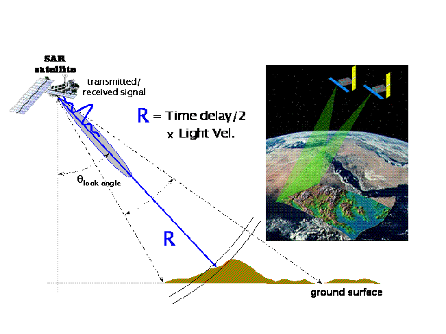

8.1 Summary
In today’s lecture, we explored Synthetic Aperture Radar (SAR) technology and compared it with the optical imagery we’ve been using throughout this module. We deep dived into the details of SAR, including its polarization and wavelength, and discussed how SAR functions. Specifically, we focused on change detection in SAR images. While we discussed one method in depth during the lecture, the slides presented various other methods for change detection.
Synthetic Aperture Radar (SAR)
(SAR) is a radar technology utilized for generating two-dimensional images or three-dimensional reconstructions of various objects, including landscapes. SAR achieves finer spatial resolution by employing the motion of the radar antenna over a target area, which differs from the stationary beam-scanning radars traditionally used. Functioning as an active sensor, SAR transmits microwave signals and captures the signals reflected, or backscattered, from the Earth’s surface. This capability enables SAR to produce high-resolution images using relatively compact antennas. Also SAR possesses unique attributes such as cloud-penetrating capabilities.

SAR Polarization and Scattering Mechanisms
Polarization refers to the orientation of the plane in which the transmitted electromagnetic wave swings. SAR sensors usually transmit linearly polarized whereby the advantage of radar sensors is that signal polarization can be precisely controlled on both transmit and receive. Signal strength of different polarizations carries information about the imaged surface structure, based on different types of scattering which are rough surface, volume, and double bounce scattering. (Earth Science Data Systems 2020)
Rough surface scattering, such as that caused by bare soil or water, is most sensitive to VV scattering.
Volume scattering, for example, caused by the leaves and branches in a forest canopy, is most sensitive to cross-polarized data like VH or HV.
The last type of scattering, double bounce, is caused by buildings, tree trunks, or inundated vegetation and is most sensitive to an HH polarized signal.
Lastly, as wavelength changes signal penetration depth, it drives the amount of signal attributed to different scattering types.

Change Detection in SAR
Change detection in (SAR) images involves identifying changes in land cover over time by examining and contrasting two or more SAR images captured at different times but covering the same geographic region. This method is highly beneficial in remote sensing applications due to SAR’s ability to acquire images regardless of weather conditions and its capability to penetrate clouds and darkness. This technique is highly valuable to a large number of applications, such as flood detection, disaster monitoring, urban planning, and land cover data monitoring. However, the inherent speckle noise in SAR images can lead to false alarms and misdetections.(Shukla et al. 2023)
8.2 Application
In this application section, I’ll deep dive into the study of change detection in SAR images. While we’ve explored various techniques and methods for change detection in previous lectures, I’ve chosen to focus on a methodology that hasn’t been extensively covered. My aim is to introduce a new approach that offers insights beyond what’s been discussed in class, enriching my understanding and exploration of SAR image analysis for change detection purposes in my last learning diary entry.
Change Detection in Synthetic Aperture Radar Images based on Image Fusion and Fuzzy Clustering: (Gong, Zhou, and Ma 2012)
This paper highlights the challenges in change detection in Synthetic Aperture Radar (SAR) images, primarily due to speckle noise. The paper suggests the use of the ratio operator over subtraction for SAR images to handle speckle noise and calibration errors. To enhance change detection, it introduces image fusion to combine mean-ratio and log-ratio images. Furthermore, it proposes a robust fuzzy clustering algorithm that incorporates spatial context to improve resistance against noise and enhance change detection accuracy.
Methodology
The paper methodology proposed a new approach for change detection in SAR images, made of two main steps: generating a difference image through image fusion and detecting changed areas in the fused image using an improved Fuzzy C-Means (FCM) algorithm:
Image Fusion techniques are used to improve image quality, mainly focusing on pixel-level fusion using methods like the discrete wavelet transform (DWT). The DWT separates frequencies in time and space in efficient manner, making it suitable for change detection tasks with large volumes of image data. The fusion process consists of DWT computation of each source image, fusing corresponding coefficients, and applying inverse DWT to obtain the fused result.
Fuzzy Clustering: Clustering to differentiate between changed and unchanged areas in the fused image is performed by using an improved FCM algorithm. Traditional FCM algorithms often lack robustness to noise, prompting the development of variants like FCM_S and FGFCM incorporating local spatial information. However, parameter tuning is needed for these approaches and may still be sensitive to noise. To address this, a robust Fuzzy Local Information C-Means (FLICM) algorithm is proposed. It utilises a fuzzy factor to balance noise robustness and maintain image detail. Additional improvement is made by replacing spatial distance with the local coefficient of variation to better handle noise resulting in the reformulated RFLICM algorithm.

8.2.0.1 Experiments
To assess the proposed method effectiveness, the paper ran experiments on three different data sets. I will discuss in detail one of them as I believe it is adequate for this section:
- Bern data set
Wavelet image fusion effectiveness in generating difference images was evaluated against mean-ratio and log-ratio methods. The fused difference image captured step changes, suppressing unchanged regions using wavelet coefficients from the log-ratio image. Results showed that log-ratio operator PCC was 99.27% for Otsu and 99.24% for K-means, while the proposed approach achieved the highest PCC (99.35% for Otsu and 99.36% for K-means) and kappa (0.781 for Otsu and 0.784 for K-means). While mean-ratio image produced more spots in change detection due to speckle effects, the log-ratio image had fewer spots but suffered from information loss in changed areas. The wavelet fusion image reduced errors in change detection results. In the second experiment, the RFLICM algorithm impact on SAR-image change detection using wavelet fusion difference images was evaluated. Traditional FCM produced many spots due to its lack of spatial context consideration. However, FLICM and RFLICM yielded robust change detection maps, with RFLICM outperforming FLICM and FCM with a PCC of 99.68%, 99.66%, and 99.37% respectively.


8.2.0.2 Conclusion
The method used in change detection in (SAR) images combines wavelet image fusion and an improved fuzzy clustering algorithm, Robust Fuzzy Local Information C-Means (RFLICM). This method outperforms other methods like image differencing technique which struggles due to the speckle noise presence as well as the statistical properties of SAR images being non-robust to calibration errors. The wavelet fusion approach in the proposed method improves changed region information and suppresses background noise by integrating mean-ratio and log-ratio images. Meanwhile, the RFLICM algorithm leverages local spatial and gray information which make it more accurate and less sensitive to the probability statistics model than traditional thresholding techniques. Results show that this method outperforms traditional ones, by wavelet fusion strategy integrating with log-ratio and mean-ratio operators, and RFLICM showing fewer errors and spots in change detection results. I really like this approach because and according to my understanding this can be useful in providing a more accurate reflection for real world change detection and better suppression of background noise.
8.3 Reflection
It was really interesting to cover and go deep in the change detection of SAR images methods. For me I feel like because I’m interested in using sattelite images and remote sensing to map the impact of conflict and to detect changes in those areas. In the lectures we talked about images enhancements methods and image fusion was one of them. I got intrigued in finding out more about image fusion methods especially the ones that we haven’t covered. For this reason, I searched for discrete wavelet transform, which was surprisingly an eye opening because I learned so much about the SAR images change detection and what are the hardships in its applications. I think this change detaction method is crucial for humanitarian organization work in detecting in a precise manner where to focus their efforts and the most damaged areas and buildings. This will eventually lead to deliver the most efficent excution plan for any humanitarian intervention. Some of the stuff that are covered in this lecture was mentioned before but briefly like polarization and scattering although they are simple but they have a great importance.
8.4 Reference
Change Detection in Synthetic Aperture Radar Images based on Image Fusion and Fuzzy Clustering (Gong.M, Zhou.Z 2012)
Change Detection on SAR Images (R.A. Alagu Raja,K. Vaiyammal 2017).
Deep Learning-Based Suppression of Speckle-Noise in Synthetic Aperture Radar (SAR) Images: A Comprehensive Review (Kant Shukla.S, K. Dwivedi.S 2023).
Deep Despeckling of SAR Images to Improve Change Detection Performance (Ihmeida.M, Shahzad.M 2023).